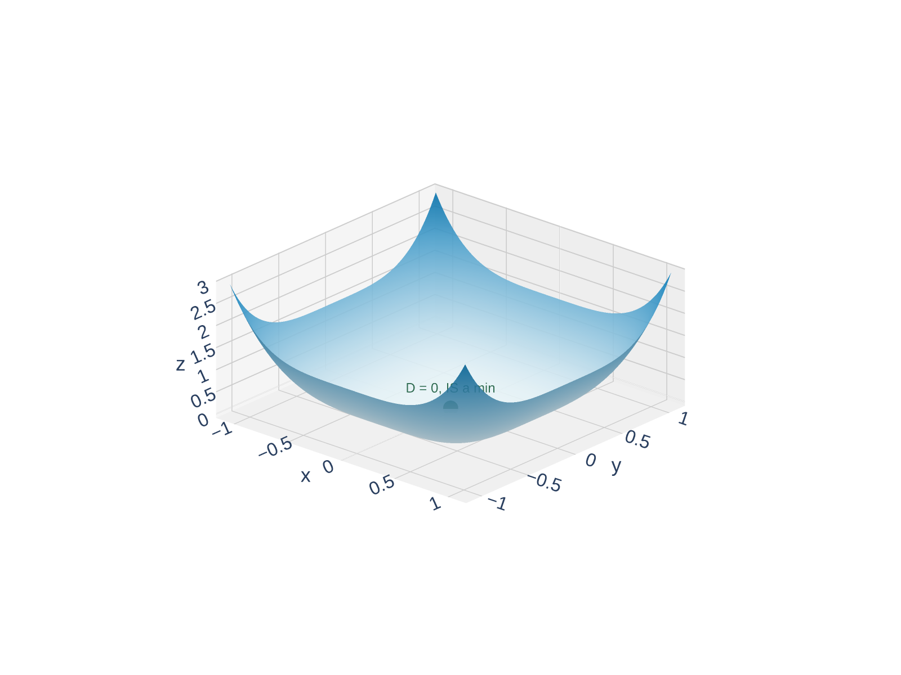
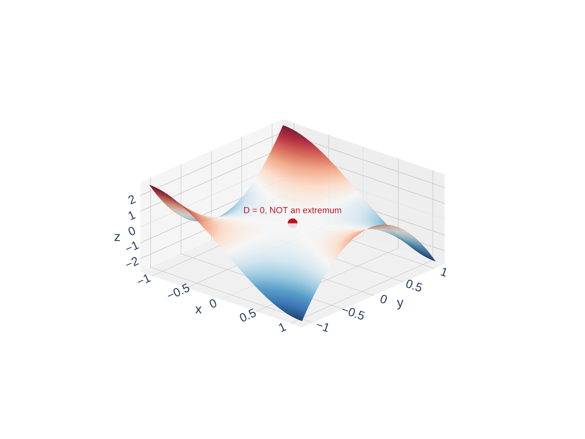

Section 14.7: Maximum and Minimum Values
Partial Derivatives
MTH 310
Calculus III
Local Extrema on Surfaces
In Calc I, a local max of \(y = f(x)\) is a ``peak'' and a local min is a ``valley.'' What does this look like for a surface \(z = f(x,y)\)?
Local Maximum and Minimum
A function \(f(x,y)\) has a local maximum at \((a,b)\) if \(f(x,y) \leq f(a,b)\) for all \((x,y)\) near \((a,b)\).
A local minimum at \((a,b)\) means \(f(x,y) \geq f(a,b)\) for all \((x,y)\) near \((a,b)\).
Can a differentiable function \(f\) have a local maximum at \((a,b)\) with \(f_x(a,b) = 3\)?
No! If \(f_x(a,b) = 3\), the surface is still rising in the \(x\)-direction — so \((a,b)\) can't be the highest point nearby. At any local extremum the tangent plane must be horizontal: both \(f_x = 0\) and \(f_y = 0\).
Theorem: Necessary Condition for Local Extrema
If \(f\) has a local extremum at \((a,b)\) and the first-order partial derivatives exist there, then
\[f_x(a,b) = 0 \quad \text{and} \quad f_y(a,b) = 0\]
OK, so both partials must be zero. But is that enough? No — a saddle point has \(f_x = 0\) and \(f_y = 0\) but is neither a max nor a min.
Optimization: From Calc I to Calc III
In Calculus I you learned a systematic optimization procedure. Let's see what changes in Calculus III.
| Calculus I (\(y = f(x)\)) | Calculus III (\(z = f(x,y)\)) | |
|---|---|---|
| Critical points | \(f'(x) = 0\) or DNE | \(f_x = 0\) and \(f_y = 0\) (or DNE) |
| Classify | 2nd Derivative Test | 2nd Derivative Test (with \(D\)) |
| New phenomenon | — | Saddle points! |
| Absolute extrema | Check critical pts + endpoints | Check critical pts + boundary |

Familiar: Horizontal tangent (\(f'=0\)) at each local extremum. Classify with the sign of \(f''\).

New in Calc III: At a saddle point the tangent plane is horizontal, but the surface curves up in one direction and down in another.

Calc I: The absolute max is at an endpoint, not the interior local max. Must check both!

Calc III: Same idea — but now the ``boundary'' is a curve, not just two points.
Finding Critical Points
Critical Point
A point \((a,b)\) is a critical point of \(f\) if:
- \(f_x(a,b) = 0\) and \(f_y(a,b) = 0\), or
- one (or both) partial derivatives do not exist there
Procedure for finding critical points:
- Compute \(f_x\) and \(f_y\)
- Set \(f_x = 0\) and \(f_y = 0\) simultaneously
- Solve the system of equations for \(x\) and \(y\)
Example: Find the Critical Points
Example 1
Find the critical points of \(f(x,y) = 2x^3 + xy^2 + 5x^2 + y^2\).
Step 1: Compute partial derivatives.
\[f_x = 6x^2 + y^2 + 10x\]
\[f_y = 2xy + 2y\]
Step 2: Set \(f_y = 0\):
\[2xy + 2y = 0\]
\[2y(x + 1) = 0\]
so \(y = 0\) or \(x = -1\).
Case 1: \(y = 0\)
\[f_x = 6x^2 + 10x = 2x(3x + 5) = 0\]
\[x = 0 \quad \text{or} \quad x = -\tfrac{5}{3}\]
Case 2: \(x = -1\)
\[f_x = 6(-1)^2 + y^2 + 10(-1) = y^2 - 4 = 0\]
\[y = \pm 2\]
Critical points:
\[(0,\, 0), \quad \left(-\tfrac{5}{3},\, 0\right), \quad (-1,\, 2), \quad (-1,\, -2)\]
The Second Derivative Test
Now that we can find critical points, how do we classify them?
Second Derivative Test
Suppose the second partial derivatives of \(f\) are continuous near \((a,b)\) and \(f_x(a,b) = f_y(a,b) = 0\). Define:
\[D = D(a,b) = f_{xx}(a,b) \cdot f_{yy}(a,b) - \left[f_{xy}(a,b)\right]^2\]
| Condition | Conclusion |
|---|---|
| \(D > 0\) and \(f_{xx} > 0\) | Local minimum |
| \(D > 0\) and \(f_{xx} < 0\) | Local maximum |
| \(D < 0\) | Saddle point |
| \(D = 0\) | Inconclusive (test fails) |
Zoomed views of \(f(x,y) = 2x^3 + xy^2 + 5x^2 + y^2\) near each type of critical point — rotate to explore!

\(D > 0\), \(f_{xx} > 0\) \(\Rightarrow\) Local min

\(D > 0\), \(f_{xx} < 0\) \(\Rightarrow\) Local max

\(D < 0\) \(\Rightarrow\) Saddle point
Quick Check: Use the Second Derivative Test
You've found a critical point and computed:
\[f_{xx} = -6, \quad f_{yy} = -4, \quad f_{xy} = 1\]
Compute \(D\) and classify. Local max, local min, or saddle?
\(D = (-6)(-4) - (1)^2 = 24 - 1 = 23 > 0\). Since \(D > 0\), it's an extremum.
\(f_{xx} = -6 < 0\) \(\Rightarrow\) surface curves downward \(\Rightarrow\) local maximum.
Caution: When \(D = 0\)
Example 2
Show that \(D = 0\) at the origin for \(f(x,y) = x^4 + y^4\). Is \((0,0)\) actually an extremum?
\(f_x = 4x^3\), \(f_y = 4y^3\) \(\Rightarrow\) \((0,0)\) is a critical point.
\(f_{xx} = 12x^2\), \(f_{yy} = 12y^2\), \(f_{xy} = 0\)
At \((0,0)\): \(D = (0)(0) - 0^2 = 0\) — test is inconclusive.
But \(f(x,y) = x^4 + y^4 \geq 0 = f(0,0)\) for all \((x,y)\), so \((0,0)\) is clearly an absolute minimum.
\(D = 0\) can go either way! Both surfaces below have \(D = 0\) at the origin — rotate to explore!

\(f = x^4 + y^4\): So flat that all second derivatives vanish — but still a minimum.

\(f = x^3 - 3xy^2\): A ``monkey saddle'' with three lobes — definitely not an extremum.
Example: Classify the Critical Points
Example 3
Classify all critical points of \(f(x,y) = 2x^3 + xy^2 + 5x^2 + y^2\).
(We already found them: \((0,0)\), \((-\tfrac{5}{3}, 0)\), \((-1, 2)\), \((-1, -2)\).)
Second partials: \(f_{xx} = 12x + 10\), \(\;f_{yy} = 2x + 2\), \(\;f_{xy} = 2y\)
At \((0,0)\): \(D = (10)(2) - 0 = 20 > 0\), \(f_{xx} = 10 > 0\) \(\Rightarrow\) local min
At \((-\tfrac{5}{3}, 0)\): \(D = (-10)(-\tfrac{4}{3}) - 0 = \tfrac{40}{3} > 0\), \(f_{xx} = -10 < 0\) \(\Rightarrow\) local max
At \((-1, 2)\): \(D = (-2)(0) - 16 = -16 < 0\) \(\Rightarrow\) saddle point
At \((-1, -2)\): \(D = (-2)(0) - 16 = -16 < 0\) \(\Rightarrow\) saddle point


Your Turn: Find and Classify Critical Points
Example 4
Find and classify the critical points of \(f(x,y) = x^3 - 3xy + y^3\).
\(f_x = 3x^2 - 3y = 0\) \(\Rightarrow\) \(y = x^2\)
\(f_y = -3x + 3y^2 = 0\) \(\Rightarrow\) \(x = y^2\)
Substitute \(y = x^2\) into \(x = y^2\):
\(x = (x^2)^2 = x^4\) \(\Rightarrow\) \(x^4 - x = 0\) \(\Rightarrow\) \(x(x^3 - 1) = 0\)
So \(x = 0\) (then \(y = 0\)) or \(x = 1\) (then \(y = 1\)).
Critical points: \((0,0)\) and \((1,1)\).
Classify: \(f_{xx} = 6x\), \(f_{yy} = 6y\), \(f_{xy} = -3\)
At \((0,0)\): \(D = (0)(0) - (-3)^2 = -9 < 0\) \(\Rightarrow\) saddle point
At \((1,1)\): \(D = (6)(6) - (-3)^2 = 27 > 0\), \(f_{xx} = 6 > 0\) \(\Rightarrow\) local minimum

The Extreme Value Theorem
Recall from Calc I: if \(f\) is continuous on \([a,b]\), then \(f\) attains an absolute max and an absolute min on \([a,b]\).
Extreme Value Theorem (Two Variables)
If \(f\) is continuous on a closed, bounded set \(D\) in \(\mathbb{R}^2\), then \(f\) attains an absolute maximum and an absolute minimum on \(D\).
Closed set: includes all its boundary points (like \(\leq\) vs. \(<\))
Bounded set: fits inside some large disk (not stretching to infinity)
Cautionary notes:
- Absolute extrema may occur where \(f\) is not differentiable
- Absolute extrema may occur on the boundary (not just interior critical points)
- There can be infinitely many absolute extrema
Quick Check: Why Check the Boundary?
Why can't we just find interior critical points and pick the largest value?
\(f'(x) = 2x = 0\) \(\Rightarrow\) \(x = 0\) (local min, \(f(0) = 0\)).
The absolute max is at the endpoint \(x = 2\): \(f(2) = 4\).
The critical point gave the minimum — the maximum is on the boundary.
Example: Absolute Extrema on a Rectangle
Example 5
Find the absolute maximum and minimum values of
\[f(x,y) = x^4 + y^4 - 4xy + 2\]
on the set \(D = \{(x,y) \mid 0 \leq x \leq 3,\; 0 \leq y \leq 2\}\).
Step 1: Interior critical points. Set \(f_x = 0\) and \(f_y = 0\):

\[f_x = 4x^3 - 4y = 0 \;\Rightarrow\; y = x^3\]
\[f_y = 4y^3 - 4x = 0 \;\Rightarrow\; x = y^3\]
Substituting: \(x = (x^3)^3 = x^9\) \(\Rightarrow\) \(x^9 - x = 0\) \(\Rightarrow\) \(x(x^8 - 1) = 0\)
So \(x = 0\) or \(x = 1\) (taking real roots). Gives critical points \((0,0)\) and \((1,1)\).
\(f(0,0) = 2\) and \(f(1,1) = 1 + 1 - 4 + 2 = 0\)
Checking the Boundary (Continued)
Step 2: Check \(f\) on each edge of the rectangle \([0,3] \times [0,2]\).
Edge 1: \(y = 0\), \(0 \leq x \leq 3\)
\[f(x, 0) = x^4 + 2\]
No critical points to find (increasing on \([0,3]\)). Check endpoints:
\[f(0,0) = 2, \qquad f(3,0) = 81 + 2 = 83\]
Edge 2: \(x = 3\), \(0 \leq y \leq 2\)
\[f(3, y) = 81 + y^4 - 12y + 2 = y^4 - 12y + 83\]
Set \(\dfrac{d}{dy}f = 4y^3 - 12 = 0\) \(\Rightarrow\) \(y = \sqrt[3]{3} \approx 1.44\). Evaluate:
\[f(3,0) = 83, \qquad f(3, \sqrt[3]{3}) \approx 74.0, \qquad f(3,2) = 75\]
Edge 3: \(y = 2\), \(0 \leq x \leq 3\)
\[f(x, 2) = x^4 - 8x + 18\]
Set \(\dfrac{d}{dx}f = 4x^3 - 8 = 0\) \(\Rightarrow\) \(x = \sqrt[3]{2} \approx 1.26\). Evaluate:
\[f(0,2) = 18, \qquad f(\sqrt[3]{2},2) \approx 11.97, \qquad f(3,2) = 75\]
Your Turn: Check Edge 4 (\(x = 0\), \(0 \leq y \leq 2\))
yourself before looking ahead — it's the simplest one!
Edge 4: \(x = 0\), \(0 \leq y \leq 2\)
\[f(0, y) = y^4 + 2\]
No critical points (increasing on \([0,2]\)). Check endpoints:
\[f(0,0) = 2, \qquad f(0,2) = 18\]
Step 3: Compare all values:
| Point | \(f\)-value |
|---|---|
| \((1, 1)\) | \(0\) \(\leftarrow\) absolute min |
| \((0, 0)\) | \(2\) |
| \((3, 0)\) | \(83\) \(\leftarrow\) absolute max |
| \((3, 2)\) | \(75\) |
| \((3, \sqrt[3]{3})\) | \(\approx 74.0\) |
![Contour plot of f = x to the fourth plus y to the fourth minus 4xy plus 2 on the rectangle D = [0,3] times [0,2]. Level curves show the absolute minimum at (1,1) in the interior (blue star, f=0) and the absolute maximum at (3,0) at a boundary corner (red star, f=83).](figures/14_7_rect_contour.png)
Application: Minimum Surface Area Box
Example 6
Find the dimensions of a rectangular box with volume \(1000 \text{ cm}^3\) that has the smallest possible surface area.
Setup: Let the box have dimensions \(x\), \(y\), \(z\) (in cm).
- Constraint: \(xyz = 1000\) \(\Rightarrow\) \(z = \frac{1000}{xy}\)
- Minimize: \(S = 2xy + 2xz + 2yz\)

Substituting \(z = \frac{1000}{xy}\):
\[S(x,y) = 2xy + \frac{2000}{y} + \frac{2000}{x}\]
\(S_x = 2y - \frac{2000}{x^2} = 0\) \(\Rightarrow\) \(y = \frac{1000}{x^2}\)
\(S_y = 2x - \frac{2000}{y^2} = 0\) \(\Rightarrow\) \(x = \frac{1000}{y^2}\)
Substituting the first into the second: \(x = \frac{1000 x^4}{1000000} = \frac{x^4}{1000}\)
So \(x^3 = 1000\) \(\Rightarrow\) \(x = 10\). Then \(y = 10\) and \(z = 10\).
But how do we know this is the global minimum? The domain \(x > 0\), \(y > 0\) is open and unbounded — no EVT. Instead, check the boundary behavior:
- As \(x \to 0^+\) or \(y \to 0^+\): \(\;\frac{2000}{x}\) or \(\frac{2000}{y} \to \infty\), so \(S \to \infty\)
- As \(x \to \infty\) or \(y \to \infty\): \(\;2xy \to \infty\), so \(S \to \infty\)
\(S\) blows up in every extreme direction, so a minimum must exist in the interior. There's only one critical point — it wins.